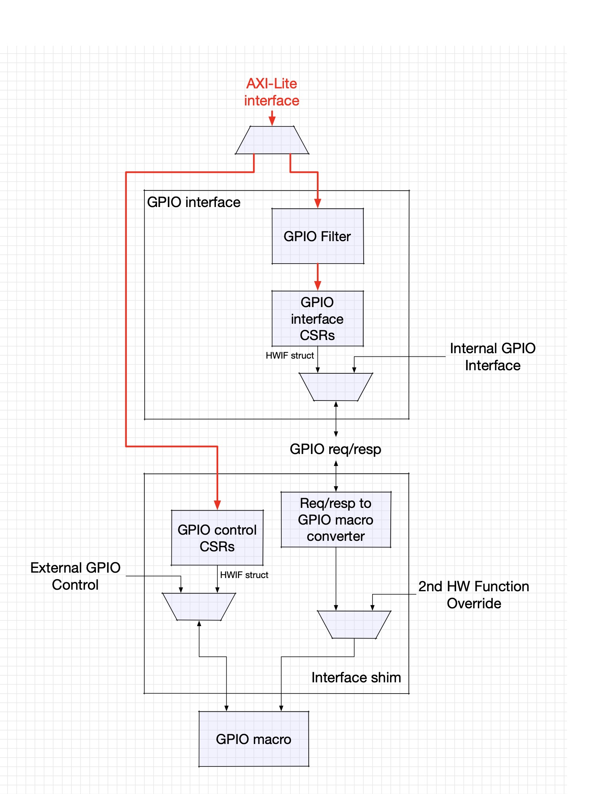

GPIO Peripheral
1. Overview
The GPIO (General Purpose Input/Output) peripheral provides programmable digital I/O capabilities for the OCAH system. It serves as a flexible interface for configuration straps, general-purpose signaling, and bit-banging protocols. The peripheral features dual-mode operation supporting both register-driven control and LSIO (Low Speed Input/Output) interface control with comprehensive access filtering and interrupt generation capabilities.
2. Description and Features
-
Dual Control Modes: Register-driven control or LSIO interface selection with programmable direction control
-
Flexible I/O Configuration: Bidirectional data path with independent RX/TX enable controls
-
Security & Access Control: Advanced register access filtering with AXI protection level requirements
-
Configuration Strap Support: Hardware strap capture during system reset for boot-time configuration
-
Comprehensive Interrupt System: Configurable interrupt generation with multiple trigger modes
-
Programmable Electrical Characteristics: Software-configurable drive strength and pull resistors
-
Standard Bus Interfaces: Support for both APB4 and AXI4-Lite register interfaces
3. Architecture
At the heart of the OCAH system’s digital I/O lies the GPIO peripheral, a controller designed for both versatility and robust security. Its dual-mode operation allows it to seamlessly switch between register-driven control and direct hardware guidance via the LSIO interface, all while maintaining strict access governance and flexible interrupt handling throughout.
GPIO controller and technology-specific interface shim shows the controller, LSIO selection, and technology-specific pad interface.

3.1. Functional Blocks
The top-level GPIO controller (gpio.sv) sits at the center of the architecture, orchestrating the actions of all internal components. It elegantly arbitrates incoming bus transactions, mediates between register and LSIO modes, fuses interrupt sources into a unified signal, and ensures strap values are captured properly when the system starts. Address spaces are kept distinct and the transition between control modes is smooth and automatic.
Security is enforced by the Access Control Filter (gpio_filter.sv). True to its name, it inspects every AXI read and write transaction, confirming the proper permission levels before allowing access. The protection requirements are software-programmable, allowing enforcement policies to adapt to changing system needs on the fly.
The filter implements full 3-bit AXI protection matching, comparing the
transaction’s protection bits (aw.prot[2:0] for writes,
ar.prot[2:0] for reads) against configurable requirement values. The
protection bits encode privilege level (bit 0), security domain (bit 1),
and transaction type (bit 2). When protection filtering is enabled, only
transactions with matching protection attributes are allowed through;
unauthorized attempts are blocked and receive an immediate error response,
all while keeping performance unaffected for legitimate accesses.
Protection filtering is configured via the ACCESS_FILTER register
fields: awprot_requirement and arprot_requirement specify the
required protection values, while write_filter_enable and
read_filter_enable control whether filtering is active. See the
Programming section for configuration details.
Between the hardware and software is the GPIO Shim (gpio_shim.sv). This block translates software-side register programming into model-specific control signals, maintaining a consistent state across the register interface and the underlying physical I/O. The shim also abstracts model-specific details so different pad implementations can coexist under a unified interface.
Finally, the GPIO Model (gpio_model/) is where electrical attributes and physical pad behavior live. It offers programmable drive strengths, pull-up and pull-down configuration, signal conditioning to guard against glitches, and fully independent TX/RX enables, making true bidirectional I/O possible.
3.2. Data Flow Architecture
In typical register-driven mode, the data path forms a tight, predictable loop: software writes an output value into a DATA_CTRL register, the mode selector switches to software control, and the register’s value flows to the model, driving the I/O pad. Input values are always readable via a separate field, ensuring software insight into pad state.
When LSIO mode is engaged, control shifts: the LSIO hardware asserts its selection input, and from this moment, it directly governs the pad’s output and enable signals. The regular register pathway is bypassed, and the status of LSIO is reflected back to software for monitoring purposes. Thanks to the clear priority scheme, LSIO always wins control if contention arises.
3.3. Control Path and Mode Selection
Configuration sources follow a strict ranking: LSIO commands always take the highest precedence, overriding any register settings when active. If LSIO is not in control, the system defers to register-directed configuration. If neither is in play, safe hardware defaults ensure the pad remains in a benign state.
The logic for this selection is straightforward but decisive:
if (lsio_interface_select_i && !lsio_disable) {
// LSIO mode: the hardware request takes the pad, regardless of
// interface_enable. lsio_disable is software's only way to refuse it.
pad_control_source = LSIO;
} else if (interface_enable || use_reg_*) {
// Register mode: software control
pad_control_source = REGISTERS;
} else if (lsio_select && !lsio_disable) {
// Software-forced LSIO. Ranked below the register interface, unlike the
// hardware select line above.
pad_control_source = LSIO;
} else {
// Defaults: pad is idle and safe
pad_control_source = DEFAULTS;
}3.4. Interrupts: Flexible and Responsive
The GPIO’s interrupt subsystem is engineered for flexibility. It supports both level and edge detection, allowing software to choose between active-high/low levels or rising/falling edges. Interrupts can be enabled or masked at runtime, and the state is always visible to software.
Here’s a look at the internal decision logic:
interrupt_trigger = case (interrupt_type)
2'b00: pad2core; // Active-high level
2'b01: !pad2core; // Active-low level
2'b10: pad2core_rising_edge; // Rising edge
2'b11: pad2core_falling_edge; // Falling edge
endcase
interrupt_o = interrupt_enable && interrupt_trigger;3.5. Clocking and Reset: Safe and Predictable
All GPIO logic is synchronized to a single system clock (clk_i). There are no internal clock domains or generated clocks to complicate timing— everything operates in lockstep, rising edge after rising edge.
Reset is provided as a synchronous active-low input (rst_ni). When asserted, every flip-flop in the design is immediately reset to a known baseline. During the reset period, the pad value is continuously monitored; once reset is released (on a clock edge), the final pad state is latched as a configuration strap. Only after this carefully ordered process does the GPIO begin normal operation, fully configured and secure.
4. Interface
The GPIO peripheral provides bus interfaces for register access, LSIO integration for hardware protocols, and direct GPIO pad connections.
Each gpio instance drives one pad. The peripheral comprises 65 pads: 61 bonded and 4
unbonded.
The parameters and ports of gpio are listed in gpio.
4.1. LSIO Interface
The LSIO (Low Speed Input/Output) interface enables hardware-controlled GPIO operation for protocol processing.
4.2. LSIO Protocol Specifications
-
Selection Priority: an asserted
lsio_interface_select_ioverrides register-driven control, including DATA_CTRL.interface_enable and the DATA_CTRL_ENABLE.use_reg_* per-field overrides. The software force bit DATA_CTRL.lsio_select ranks the other way, below the register interface; DATA_CTRL.lsio_disable gates both -
Enable Logic: Active-low enables for both transmit and receive paths
-
Data Latency: Zero-cycle latency for data path when selected
-
Mode Switching: Immediate effect, no settling time required
-
Status Reflection: hardware LSIO request status available in DATA_CTRL.lsio_enable register. The field tracks the hardware request line gated by lsio_disable, so it reads 0 during a software-forced LSIO
4.3. GPIO Pad Interface
The GPIO pad interface provides direct connection to external pads with bidirectional capabilities.
4.4. Interrupt Interface
The interrupt interface provides event notification capabilities with configurable trigger modes.
The strap-capture output captured_strap_o is a port of gpio_shim, not of gpio; it
holds the pad value captured when the cold reset is released.
4.5. Interrupt Specifications
-
Polarity: Active high (asserted when high)
-
Duration: Level-sensitive, remains asserted based on configuration
-
Trigger Modes: Level (active-high/low) and edge (rising/falling) detection
-
Clearing: Automatic clearing based on trigger mode and pad state
-
Latency: Interrupt assertion within 2-3 clock cycles of triggering event
5. Memory Map
The GPIO peripheral provides two separate register banks for comprehensive I/O control: the Interface Register Bank (gpio_intf_reg) for high-level GPIO functionality and the Control Register Bank (gpio_ctrl_reg) for physical layer characteristics. Both banks are accessed through 32-bit AXI4-Lite interfaces with independent address spaces.
5.1. Address Space Organization
The GPIO peripheral uses a dual-bank register architecture:
-
Interface Register Bank: High-level GPIO control, data path, and security filtering
-
Control Register Bank: Physical layer configuration, drive strength, and termination
Each bank operates independently with separate AXI4-Lite interfaces to enable concurrent access and modular functionality.
5.2. Reset Behavior
ACCESS_FILTER resets to 0x00010100. Both filter-enable bits are zero,
so reads and writes are initially allowed regardless of AXI PROT. The stored
read and write requirements are each 3’b001; they apply only after software
enables the corresponding filter. The filter compares transaction protection
attributes, not initiator identity, and cannot by itself guarantee SEP-only access.
DATA_CTRL resets its software controls to zero, leaving register overrides
disabled. This does not disable every pad path: with the default
INPUT_BY_DEFAULT = 1, receive is enabled and transmit disabled while cold reset
is asserted and when no interface owns the pad. After cold reset, a hardware
LSIO request can select the pad without software enabling the register interface.
Its direction signals then control transmit and receive.
The control bank’s strap_valid reflects INPUT_BY_DEFAULT, not the sampled
pad level. strap_value reports the captured strap level. The visible CONTROL
value therefore depends on the parameter and captured input as well as the
reset values of its software-controlled pad settings.
5.3. Detailed Register Map
GPIO Interface Address Map
GPIO interface configuration: pad/core routing, receive and transmit enables, and interrupt control.
Register List:
| Address | Name | Access | Description |
|---|---|---|---|
| 0x0 | DATA_CTRL | RW | - |
| 0x4 | DATA_CTRL_ENABLE | RW | - |
| 0x8 | ACCESS_FILTER | RW | GPIO Access Filter Register. WARNING: please read back this register to ensure the filter was written correctly. If you do not do so the filter may not update before your next transaction, causing unexpected behavior. |
Register Details:
DATA_CTRL
| Bits | Field | Access | Reset | Description |
|---|---|---|---|---|
| 31 | pad2core | R | 0x0 | PAD2SOC Value |
| 30:26 | Reserved | - | - | Reserved |
| 25 | lsio_enable | R | 0x0 | LSIO hardware request status. Set while lsio_interface_select_i is asserted and lsio_disable is clear. Because the hardware LSIO request outranks interface_enable, a set value also means the LSIO plane is driving this pad's data and direction. This field does not reflect a software-forced selection via lsio_select, which ranks below the register interface - it reads 0 in that case even when LSIO drives the pad. |
| 24:22 | Reserved | - | - | Reserved |
| 21:20 | interrupt_type | RW | 0x0 | Interrupt type - 0: active-high level, 1: active-low level, 2: rising edge, 3: falling edge |
| 19 | lsio_disable | RW | 0x0 | When set, LSIO accesses will be blocked from the GPIO interface |
| 18 | interrupt_enable | RW | 0x0 | Interrupt Enable. |
| 17 | lsio_select | RW | 0x0 | Force the LSIO interface to be used from software, when no hardware LSIO request is present on this pad. interface_enable has higher priority over this bit. This ranking applies to this software force bit only: the hardware lsio_interface_select_i input outranks interface_enable. Use lsio_disable to gate both. |
| 16 | interface_enable | RW | 0x0 | Register Interface Enable. Setting this chooses register values to drive the PAD. This includes core2pad, enable_rx_tx, and pad2core |
| 15:6 | Reserved | - | - | Reserved |
| 5:4 | enable_rx_tx | RW | 0x0 | Direction control. 2'b00: Neither RX nor TX enabled. 2'b01: TX enabled. 2'b10: RX enabled. 2'b11: Both enabled |
| 3:1 | Reserved | - | - | Reserved |
| 0 | core2pad | RW | 0x0 | Register-driven data to send to the pad. |
DATA_CTRL_ENABLE
| Bits | Field | Access | Reset | Description |
|---|---|---|---|---|
| 31:6 | Reserved | - | - | Reserved |
| 5 | use_reg_rx | RW | 0x0 | Per-field register override. When set, the RX direction (input enable) is taken from enable_rx_tx[1]. OR'd with interface_enable. |
| 4 | use_reg_tx | RW | 0x0 | Per-field register override. When set, the TX direction (output enable) is taken from enable_rx_tx[0]. OR'd with interface_enable. |
| 3:1 | Reserved | - | - | Reserved |
| 0 | use_reg_core2pad | RW | 0x0 | Per-field register override. When set, core2pad is register-driven. OR'd with interface_enable. |
ACCESS_FILTER
| Bits | Field | Access | Reset | Description |
|---|---|---|---|---|
| 31:19 | Reserved | - | - | Reserved |
| 18:16 | arprot_requirement | RW | 0x1 | When read_filter_enable is set, only allow read accesses with this prot value WARNING: please read back this register to ensure the filter was written correctly. If you do not do so the filter may not update before your next transaction, causing unexpected behavior. |
| 15:11 | Reserved | - | - | Reserved |
| 10:8 | awprot_requirement | RW | 0x1 | When write_filter_enable is set, only allow write accesses with this prot value WARNING: please read back this register to ensure the filter was written correctly. If you do not do so the filter may not update before your next transaction, causing unexpected behavior. |
| 7:2 | Reserved | - | - | Reserved |
| 1 | read_filter_enable | RW | 0x0 | Read Filter Enable. When set, reads require an exact match between AXI ARPROT and arprot_requirement. When clear, reads are unfiltered. PROT does not identify the initiator. WARNING: please read back this register to ensure the filter was written correctly. If you do not do so the filter may not update before your next transaction, causing unexpected behavior. |
| 0 | write_filter_enable | RW | 0x0 | Write Filter Enable. When set, writes require an exact match between AXI AWPROT and awprot_requirement. When clear, writes are unfiltered. PROT does not identify the initiator. WARNING: please read back this register to ensure the filter was written correctly. If you do not do so the filter may not update before your next transaction, causing unexpected behavior. |
GPIO Control Address Map
Per-pin GPIO pad control registers: drive strength, pull configuration, and strap capture.
Register List:
| Address | Name | Access | Description |
|---|---|---|---|
| 0x0 | CONTROL | RW | - |
Register Details:
CONTROL
| Bits | Field | Access | Reset | Description |
|---|---|---|---|---|
| 31:25 | Reserved | - | - | Reserved |
| 24 | hw2_ovrd | RW | 0x0 | Setting this register will enable the secondary HW function to override the GPIO enable and data lines. |
| 23:22 | Reserved | - | - | Reserved |
| 21 | strap_value | R | 0x0 | This register holds the captured value that was applied to the pad when reset was de-asserted. |
| 20 | strap_valid | R | 0x1 | When set, this bit indicates that the strap value is valid. This field is not set if the GPIO is not an input by default |
| 19:17 | Reserved | - | - | Reserved |
| 16 | config_enable | RW | 0x0 | Setting this choosing the register values for PAD settings. This includes pull_enable, pull_select, and schmitt_select |
| 15:11 | Reserved | - | - | Reserved |
| 10 | schmitt_select | RW | 0x0 | Register-driven schmitt select. |
| 9 | pull_select | RW | 0x0 | Register-driven pull select - by default we pull down |
| 8 | pull_enable_n0_scan | RW | 0x0 | Register-driven pull enable. Default is disabled |
| 7:3 | Reserved | - | - | Reserved |
| 2:0 | drive_strength | RW | 0x2 | Register-driven drive-strength. |
GPIO Wrapper Address Map
Top-level GPIO address map composing the interface and control register blocks.
Register List:
| Address | Name | Access | Description |
|---|---|---|---|
| 0x0 | DATA_CTRL | RW | - |
| 0x4 | DATA_CTRL_ENABLE | RW | - |
| 0x8 | ACCESS_FILTER | RW | GPIO Access Filter Register. WARNING: please read back this register to ensure the filter was written correctly. If you do not do so the filter may not update before your next transaction, causing unexpected behavior. |
| 0x10 | CONTROL | RW | - |
Register Details:
DATA_CTRL
| Bits | Field | Access | Reset | Description |
|---|---|---|---|---|
| 31 | pad2core | R | 0x0 | PAD2SOC Value |
| 30:26 | Reserved | - | - | Reserved |
| 25 | lsio_enable | R | 0x0 | LSIO hardware request status. Set while lsio_interface_select_i is asserted and lsio_disable is clear. Because the hardware LSIO request outranks interface_enable, a set value also means the LSIO plane is driving this pad's data and direction. This field does not reflect a software-forced selection via lsio_select, which ranks below the register interface - it reads 0 in that case even when LSIO drives the pad. |
| 24:22 | Reserved | - | - | Reserved |
| 21:20 | interrupt_type | RW | 0x0 | Interrupt type - 0: active-high level, 1: active-low level, 2: rising edge, 3: falling edge |
| 19 | lsio_disable | RW | 0x0 | When set, LSIO accesses will be blocked from the GPIO interface |
| 18 | interrupt_enable | RW | 0x0 | Interrupt Enable. |
| 17 | lsio_select | RW | 0x0 | Force the LSIO interface to be used from software, when no hardware LSIO request is present on this pad. interface_enable has higher priority over this bit. This ranking applies to this software force bit only: the hardware lsio_interface_select_i input outranks interface_enable. Use lsio_disable to gate both. |
| 16 | interface_enable | RW | 0x0 | Register Interface Enable. Setting this chooses register values to drive the PAD. This includes core2pad, enable_rx_tx, and pad2core |
| 15:6 | Reserved | - | - | Reserved |
| 5:4 | enable_rx_tx | RW | 0x0 | Direction control. 2'b00: Neither RX nor TX enabled. 2'b01: TX enabled. 2'b10: RX enabled. 2'b11: Both enabled |
| 3:1 | Reserved | - | - | Reserved |
| 0 | core2pad | RW | 0x0 | Register-driven data to send to the pad. |
DATA_CTRL_ENABLE
| Bits | Field | Access | Reset | Description |
|---|---|---|---|---|
| 31:6 | Reserved | - | - | Reserved |
| 5 | use_reg_rx | RW | 0x0 | Per-field register override. When set, the RX direction (input enable) is taken from enable_rx_tx[1]. OR'd with interface_enable. |
| 4 | use_reg_tx | RW | 0x0 | Per-field register override. When set, the TX direction (output enable) is taken from enable_rx_tx[0]. OR'd with interface_enable. |
| 3:1 | Reserved | - | - | Reserved |
| 0 | use_reg_core2pad | RW | 0x0 | Per-field register override. When set, core2pad is register-driven. OR'd with interface_enable. |
ACCESS_FILTER
| Bits | Field | Access | Reset | Description |
|---|---|---|---|---|
| 31:19 | Reserved | - | - | Reserved |
| 18:16 | arprot_requirement | RW | 0x1 | When read_filter_enable is set, only allow read accesses with this prot value WARNING: please read back this register to ensure the filter was written correctly. If you do not do so the filter may not update before your next transaction, causing unexpected behavior. |
| 15:11 | Reserved | - | - | Reserved |
| 10:8 | awprot_requirement | RW | 0x1 | When write_filter_enable is set, only allow write accesses with this prot value WARNING: please read back this register to ensure the filter was written correctly. If you do not do so the filter may not update before your next transaction, causing unexpected behavior. |
| 7:2 | Reserved | - | - | Reserved |
| 1 | read_filter_enable | RW | 0x0 | Read Filter Enable. When set, reads require an exact match between AXI ARPROT and arprot_requirement. When clear, reads are unfiltered. PROT does not identify the initiator. WARNING: please read back this register to ensure the filter was written correctly. If you do not do so the filter may not update before your next transaction, causing unexpected behavior. |
| 0 | write_filter_enable | RW | 0x0 | Write Filter Enable. When set, writes require an exact match between AXI AWPROT and awprot_requirement. When clear, writes are unfiltered. PROT does not identify the initiator. WARNING: please read back this register to ensure the filter was written correctly. If you do not do so the filter may not update before your next transaction, causing unexpected behavior. |
CONTROL
| Bits | Field | Access | Reset | Description |
|---|---|---|---|---|
| 31:25 | Reserved | - | - | Reserved |
| 24 | hw2_ovrd | RW | 0x0 | Setting this register will enable the secondary HW function to override the GPIO enable and data lines. |
| 23:22 | Reserved | - | - | Reserved |
| 21 | strap_value | R | 0x0 | This register holds the captured value that was applied to the pad when reset was de-asserted. |
| 20 | strap_valid | R | 0x1 | When set, this bit indicates that the strap value is valid. This field is not set if the GPIO is not an input by default |
| 19:17 | Reserved | - | - | Reserved |
| 16 | config_enable | RW | 0x0 | Setting this choosing the register values for PAD settings. This includes pull_enable, pull_select, and schmitt_select |
| 15:11 | Reserved | - | - | Reserved |
| 10 | schmitt_select | RW | 0x0 | Register-driven schmitt select. |
| 9 | pull_select | RW | 0x0 | Register-driven pull select - by default we pull down |
| 8 | pull_enable_n0_scan | RW | 0x0 | Register-driven pull enable. Default is disabled |
| 7:3 | Reserved | - | - | Reserved |
| 2:0 | drive_strength | RW | 0x2 | Register-driven drive-strength. |
6. Programming
6.1. Basic GPIO Configuration
Setting up GPIO for simple output operation:
1. Configure physical characteristics in CONTROL register: - Set drive_strength to desired value (default 010 = 6mA) - Configure pull resistors if needed - Enable config_enable = 1 2. Configure interface in DATA_CTRL register: - Set interface_enable = 1 for register control - Set enable_rx_tx = 01 for output operation - Set core2pad to desired output value 3. Monitor operation: - Check lsio_enable status for interface conflicts - Read pad2core for input feedback
6.2. Configuration Strap Capture
Reading configuration straps captured during reset:
1. Wait for system initialization to complete 2. Read DATA_CTRL.strap_valid to verify strap capture 3. If valid, read DATA_CTRL.strap_value for configuration data 4. Use strap value for system configuration decisions
Note: Strap capture only occurs if GPIO is configured as input by default (INPUT_BY_DEFAULT parameter = 1).
6.3. Interrupt Configuration
Setting up GPIO interrupt generation:
1. Configure interrupt type in DATA_CTRL.interrupt_type: - 00: Active-high level interrupt - 01: Active-low level interrupt - 10: Rising-edge interrupt - 11: Falling-edge interrupt 2. Enable interrupts: - Set DATA_CTRL.interrupt_enable = 1 3. Configure GPIO for input: - Set DATA_CTRL.enable_rx_tx = 10 (RX enabled) - Set DATA_CTRL.interface_enable = 1 4. Handle interrupts in software interrupt service routine
6.4. LSIO Interface Operation
Configuring GPIO for LSIO hardware control:
Pad ownership is ranked in three levels. Software does not need to give the pad up for a hardware LSIO peripheral to take it:
1. Hardware LSIO (lsio_interface_select_i asserted, lsio_disable = 0) 2. Register interface (interface_enable, or a DATA_CTRL_ENABLE.use_reg_* override) 3. Software-forced LSIO (DATA_CTRL.lsio_select)
Letting a hardware LSIO peripheral drive the pad:
1. Ensure DATA_CTRL.lsio_disable = 0
2. Nothing else is required. Once the peripheral asserts its select line it
takes the pad, whatever DATA_CTRL.interface_enable is set to.
3. Monitor LSIO operation:
- Check DATA_CTRL.lsio_enable for LSIO request status
- Note this field reports the hardware select line, not which plane
currently owns the pad; the two differ when lsio_disable = 1
Forcing LSIO from software, with no hardware request on the pad:
1. Disable register interface: - Set DATA_CTRL.interface_enable = 0 - Clear any DATA_CTRL_ENABLE.use_reg_* overrides 2. Set DATA_CTRL.lsio_select = 1 and ensure DATA_CTRL.lsio_disable = 0 Unlike the hardware select line, this bit ranks *below* interface_enable, so the register interface must be off for it to take effect.
Reclaiming a pad from LSIO:
1. Set DATA_CTRL.lsio_disable = 1 This gates both the hardware select line and lsio_select. 2. Set DATA_CTRL.interface_enable = 1 and program core2pad / enable_rx_tx
Some pads have their select line tied permanently asserted in the integration (the I3C pads, and the isolate-request, boot-stall and cool-reset-out pads). On those, step 1 above is mandatory: interface_enable alone will not take the pad, because the hardware request outranks it.
6.5. Security Configuration
The GPIO controller implements protection-based access filtering to
enforce security policies. The filter examines AXI protection bits
(aw.prot for writes, ar.prot for reads) and compares them against
configurable requirement values.
7. Protection Bit Encoding
AXI protection bits are 3-bit fields encoding transaction attributes:
-
Bit [0]: Privilege level (0=User, 1=Privileged)
-
Bit [1]: Security domain (0=Secure, 1=Non-Secure)
-
Bit [2]: Transaction type (0=Data, 1=Instruction)
Common protection values:
* 0x0 (000): Data, Secure, User
* 0x1 (001): Data, Secure, Privileged (default for GPIO)
* 0x2 (010): Data, Non-Secure, User
* 0x3 (011): Data, Non-Secure, Privileged
8. Filter Configuration
Setting up access control filtering:
1. Determine required protection levels: - Normal data: PROT = 0x0 (000) - Privileged data: PROT = 0x1 (001) - recommended default - Secure privileged: PROT = 0x1 (001) - Non-secure privileged: PROT = 0x3 (011) 2. Configure protection requirements: - Set ACCESS_FILTER.awprot_requirement[2:0] for writes - Set ACCESS_FILTER.arprot_requirement[2:0] for reads - Default value is 0x1 (Data, Secure, Privileged) 3. Enable filtering: - Set ACCESS_FILTER.write_filter_enable = 1 - Set ACCESS_FILTER.read_filter_enable = 1 4. Test access with different protection levels to verify operation: - Transactions with matching protection: allowed - Transactions with non-matching protection: blocked (DECERR)
9. Filter Behavior
When protection filtering is enabled: * Transactions with protection bits matching the requirement are allowed * Transactions with non-matching protection bits are blocked and receive a decode error (DECERR) response * When filtering is disabled, all transactions are allowed regardless of protection bits
The filter operates on every transaction, providing real-time security enforcement without impacting performance for legitimate accesses.
9.1. Bidirectional Operation
Configuring GPIO for bidirectional communication:
1. Set initial direction: - For output: enable_rx_tx = 01 - For input: enable_rx_tx = 10 2. Dynamic direction switching: - Write new enable_rx_tx value to change direction - Direction change takes effect immediately 3. Monitor operation: - Always read pad2core for current pad state - Write core2pad when in output mode 4. Handle contention: - Ensure external drivers are tristated before switching to output - Use pull resistors to define idle state